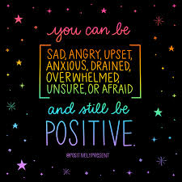

What is positive thinking?
Positive thinking is a mental attitude that perceives situations in a constructive way. It does not mean ignoring the negative. Rather, a positive thinker acknowledges a situation and looks at it productively.
Positive thinking is most effective when a person encounters neutral life events, such as starting a new job, meeting a new teacher, or beginning the first day of school. In these more ambiguous encounters, our perspective carries the most weight.
How to think positive thoughts?
Positive thinking can be achieved through a few different techniques that have been proven effective, such as positive self-talk and positive imagery.
Here are some tips that to get you started that can help you train your brain how to think positively.
1. Focus on the good things
Challenging situations and obstacles are a part of life. When you're faced with one, focus on the good things no matter how small or seemingly insignificant they seem. If you look for it, you can always find the proverbial silver lining in every cloud — even if it’s not immediately obvious.
2. Practice gratitude
Practicing gratitude has been shown to reduce stress, improve self-esteem, and foster resilience even in very difficult times. Think of people, moments, or things that bring you some kind of comfort or happiness and try to express your gratitude at least once a day. This can be thanking a co-worker for helping with a project, a loved one for washing the dishes, or your dog for the unconditional love they give you.
3. Keep a gratitude journal
Studies have found that writing down the things you’re grateful for can improve your optimism and sense of well-being. You can do this by writing in a gratitude journal every day, or jotting down a list of things you’re grateful for on days you’re having a hard time.
4. Open yourself up to humor
Be open to humor in all situations, especially the difficult ones, and give yourself permission to laugh. It instantly lightens the mood and makes things seem a little less difficult. Even if you’re not feeling it; pretending or forcing yourself to laugh can improve your mood and lower stress.
5. Spend time with positive people
Being around positive people has been shown to improve self-esteem and increase your chances of reaching goals. Surround yourself with people who will lift you up and help you see the bright side.
6. Practice positive self-talk
We tend to be the hardest on ourselves and be our own worst critic. Over time, this can cause you to form a negative opinion of yourself that can be hard to shake. To stop this, you’ll need to be mindful of the voice in your head and respond with positive messages, also known as positive self-talk.
Here’s an example of positive self-talk: Instead of thinking “I really messed that up,” try “I’ll try it again a different way.”
How to think positive when everything is going wrong
Trying to be positive when you're grieving or experiencing other serious distress can seem impossible. During these times, it's important to take the pressure off of yourself to find the silver lining. Instead, channel that energy into getting support from others.
Positive thinking isn't about burying every negative thought or emotion you have or avoiding difficult feelings. The lowest points in our lives are often the ones that motivate us to move on and make positive changes.
When going through such a time, try to see yourself as if you were a good friend in need of comfort and sound advice. What would you say to her? You'd likely acknowledge her feelings and remind her she has every right to feel sad or angry in her situation, and then offer support with a gentle reminder that things will get better.

“Positive mind Positive vibes!”